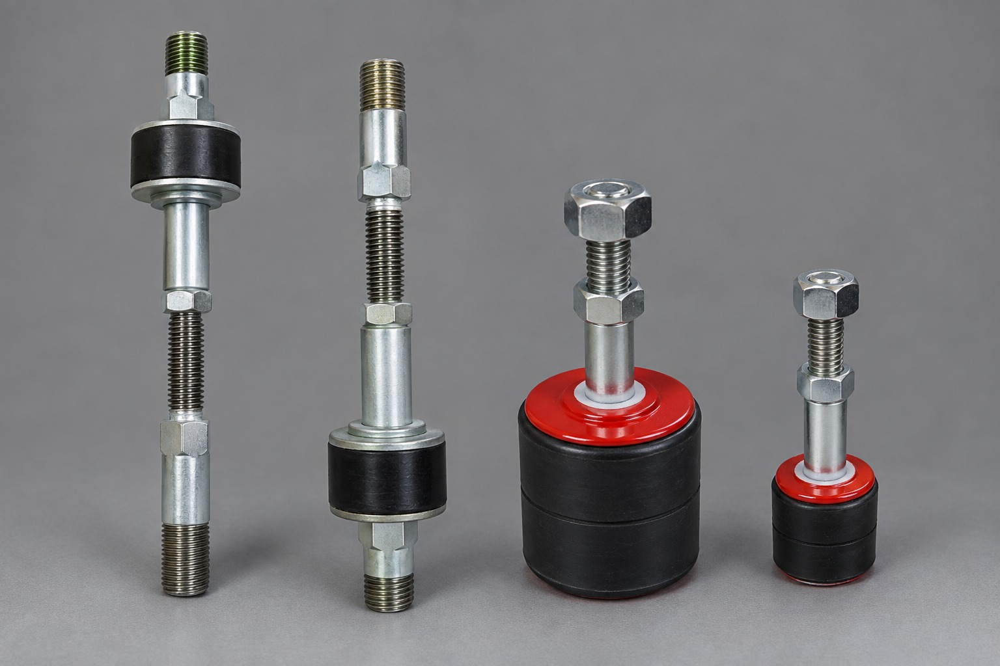
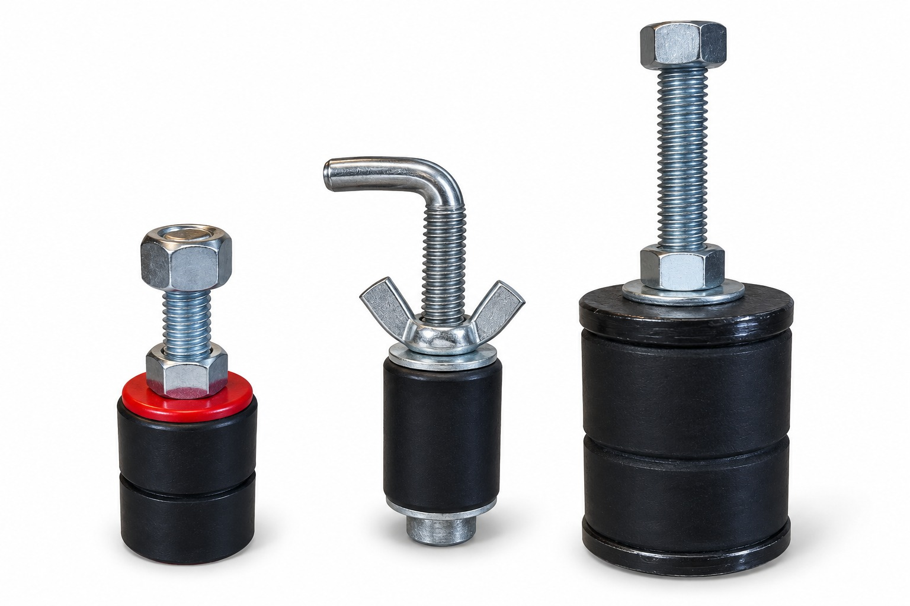
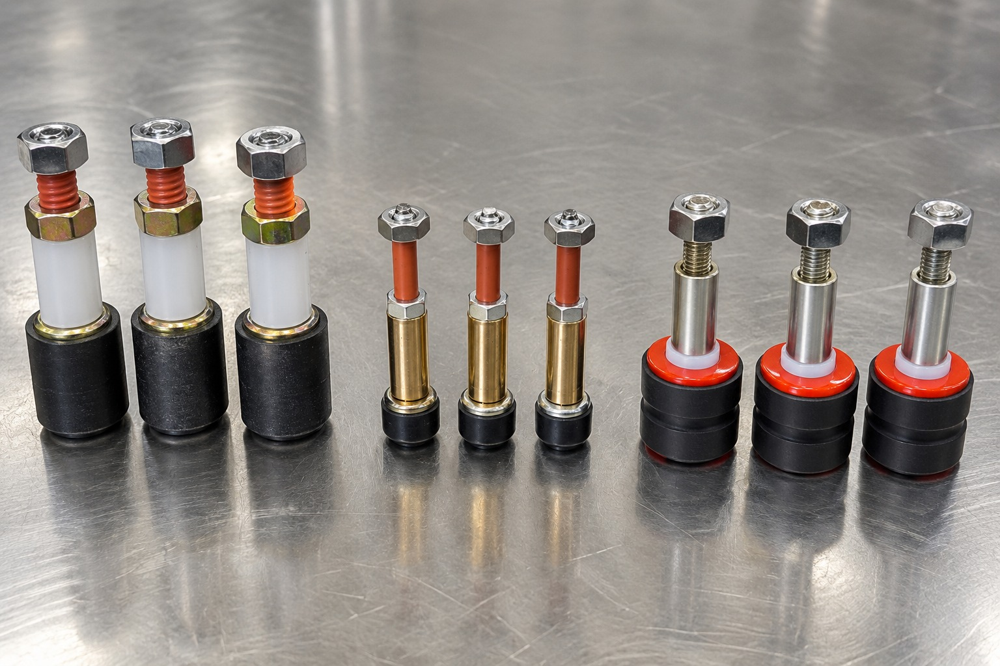

Fabricaciones especiales
Soluciones a medida cuando el catálogo estándar no alcanza.
Además de nuestras líneas estándar, desarrollamos prototipos y fabricaciones especiales, diseñados para responder a necesidades particulares de cada cliente y aplicación. Estamos completando esta sección con casos y ejemplos de desarrollo.


